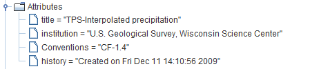
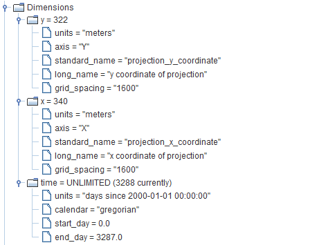
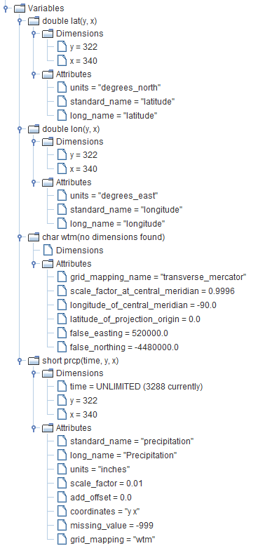

|
Using NetCDF Files With SWBNetCDF files may be used to supply SWB with spatially varied precipitation and air temperature data. NetCDF files are much more convenient to use for long simulations than are the ASCII grid files. In addition, a single NetCDF file may be created to hold gridded data for an arbitrary time range; obviously with gridded ASCII files, one per day is required. NetCDF files may also be specified as an output option. NetCDF file usage is not part of the official SWB release, in part because the file format is much tricker to get right. The Climate and Forecast Metadata Conventions (http://cf-pcmdi.llnl.gov/) are followed to the extent possible in order to make it possible to use many of the standard NetCDF tools.
CoordinatesIn order to use any of the tools listed above, the NetCDF file must supply not only the projected coordinates that SWB uses, but also the coordinates of each grid cell in latitude and longitude. If you do not wish to use any of the popular NetCDF viewers with your gridded data, you can likely skip the latitude and longitude variables. Also note that unlike most of the examples out on the web, the latitude and longitude must be specified at each grid point. In other words, the latitude variable is described as a function of y and x in grid coordinates. This is because when one begins with a grid in projected coordinates, the corresponding latitude and longitude lines obviously do not correspond and must be specified at each grid cell location. Scale FactorsThe NetCDF files discussed here do not use any NetCDF 4 features. NetCDF version 4 contains algorithms that provide significant data compression. In order to save disk space, the precipitation and air temperature data are written to disk as short integers (2 bytes) rather than as real values (4 bytes). When writing precipitation values to disk, for example, the grid values are multiplied by 100 and saved as short integer values. When this NetCDF file is read in by SWB, a scale factor and offset must be specified to allow SWB to reconstitute the values as reals: in other words, SWB needs to know that a scale factor of 0.01 must be applied to the stored value to yield the appropriate real value.
For storing temperature data, we often add 100 to the grid value and then divide by 100 in order to avoid having to store negative values. Example NetCDF File Attributes and MetadataThe attributes, dimensions, and variables for a NetCDF precipitation file readable by SWB are shown below. Attributes Dimensions Variables |